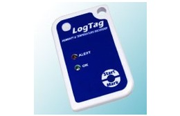
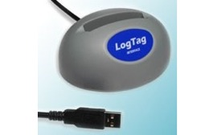

Registrador económico con sensor de temperatura integrado
Margen de temperatura -40°C … +85°C
8.000 puntos de medición.
Vida útil de la batería de hasta 3 años.
Formato: 86mmx54.5mmx8.6mm.
Software gratuito
Log-Tag HAXO-8

Registrador económico con sensor de temperatura y humedad integrado.
Margen de temperatura -40°C … +85°C.
Margen de humedad 0 … 100%.
8.000 puntos de medición.
Vida útil de la batería de hasta 3 años.
Formato: 86mmx54.5mmx8.6mm.
Software gratuito.
Log-Tag TREX-8
Datalogger para el registro de temperatura con sensor externo.
Margen de temperatura -40°C … +99°C. Precisión de hasta ±0,5°C.
8.000 puntos de medición.
Intervalo de medición mínimo de 30 segundos.
Vida útil de la batería de hasta 3 años.
A escoger entre sensor de temperatura externo de 1,5 ó 3,0m de longitud de PTFE y acero inoxidable 316 (apto para usos alimenticios) con contacto de oro.
Interface LTI para Log-Tag

Interface con conexión USB para la sincronización con todos los todos los modelos de datalogger Logtag Recorders.
La interfaz se conecta a la interfaz USB (o también a la conexión serial) de su ordenador y puede posicionarse permanentemente en su lugar de trabajo.
En menos de 5 segundos es posible consultar el contenido completo del registrador, guardarlo automáticamente y generar una gráfica.
Datalogger USB OM-EL
Registrador de datos para temperatura con pantalla LCD.
Rango de medición de -35 a 80 °C (-31 a 176 °F).
Interfaz USB para configuración y descarga de datos.
Umbrales de alarma programables por el usuario.
Indicación de estado mediante LED rojo, verde y naranja.
Registro inmediato, con retraso y pulsar–para iniciar.
Pila interna de litio de repuesto con software de control para Windows® incluido.